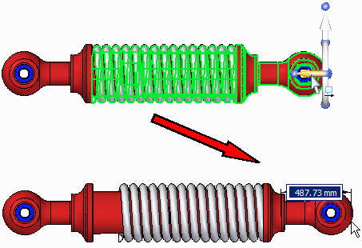

Steering Wheel Move (Assembly environment)
Overview
In assembly, the steering wheel can be used to move or copy selected components. Relationships used to position the components can be deleted or suppressed as the component changes position. Options exist to automatically attempt to reestablish relationships to other components. If synchronous faces are selected, the steering wheel can be used to move or modify the selected faces using the features of the Design Intent panel.

Overview
Components selected in an assembly can be moved or copied using the steering wheel.
When a component is moved a choice is provided to either delete or suppress the original relationships that were used to position the component. Relationships can be established automatically with other components when positioning of relative to the other components is valid.
Synchronous faces that have assembly relationships to the selected components can be found and manipulated. The Design Intent panel controls how the steering wheel manipulates these faces.
Components within a subassembly can be moved.
When a part within a subassembly is moved, the subassembly is altered and the change exists in all other assemblies where the subassembly has been placed.
Watch the following video to learn how to use the steering wheel to modify features in multiple parts at the assembly level while maintaining existing relationships.
Establishing relationships
As a component is moved, relationships that would normally prohibit movement with a fixed offset in a given direction behave as if they are floating offsets. The offset value is changed updated to a new value after the move is finished. Other relationships are either suppressed or deleted.
Options exist to attempt to automatically reestablish relationships. Valid relationships are Mate, Planar Align, Axial Align, Connect and Tangent. Valid geometry needed to automatically establish new relationships is found in components selected by the user.
Subassemblies
By selecting the move subassembly components option, individual components contained within subassemblies can be moved.
Copy Components
With the copy components option selected, the steering wheel moves copy selected occurrences to a new location. Copy behaves much like move and it allows copies to be made of components in subassemblies. The operation can span multiple subassemblies. Copied components reside in their source assembly. After the operation, new components are in the select set.
For copies of adjustable parts, the copy is made using the same measurement variables and/or values.
Select Related Faces
Assembly relationships on the select set are analyzed and faces can be selected on other components where relationships are found. Valid faces are synchronous geometry. The Design Intent panel is used when using the steering wheel to manipulate the faces.
How do I
Steering Wheel Move in an assemblyLook up more details
Steering Wheel Move command (Assembly environment)Move command bar (Assembly environment)